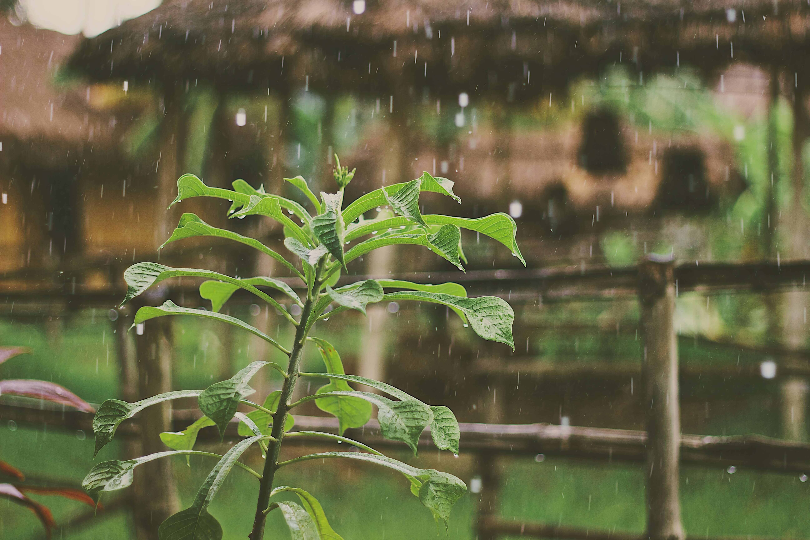
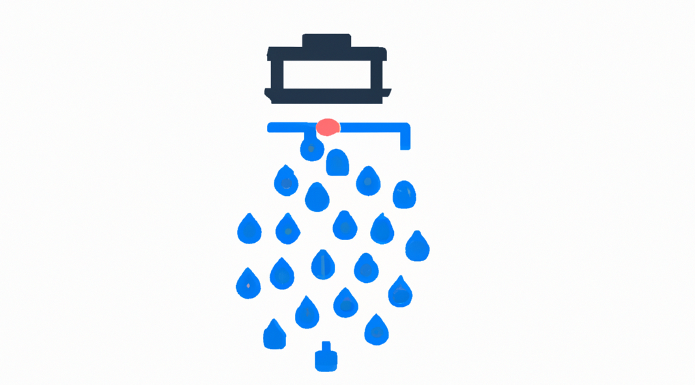

Inicio
Comienza A Ahorrar


Agregar Recolector
Recolector 1
Contenedor numero 1:
Contenedor numero 2:
Editar
Datos
Recolector 2
Contenedor numero 1:
Contenedor numero 2:
Editar
Datos
Recolector 3
Contenedor numero 1:
Contenedor numero 2:
Editar
Datos